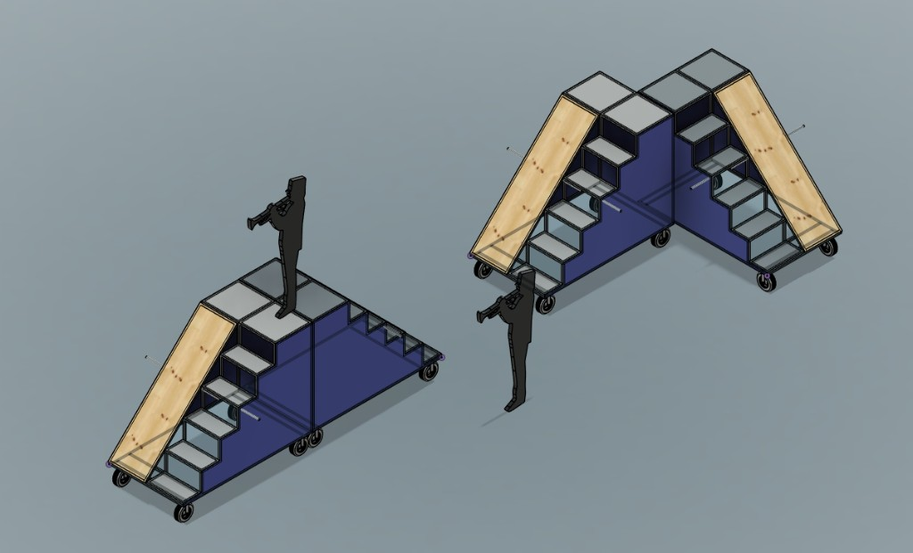
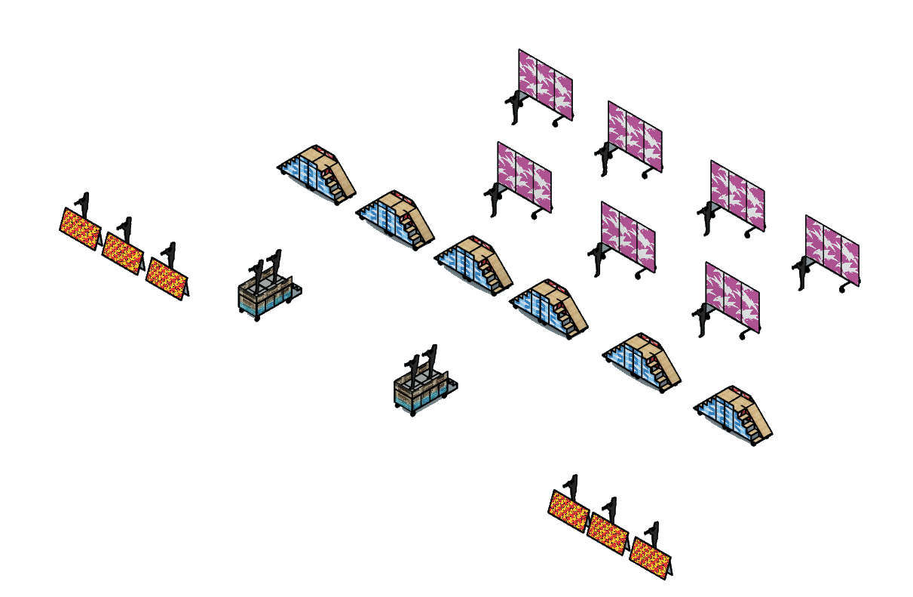
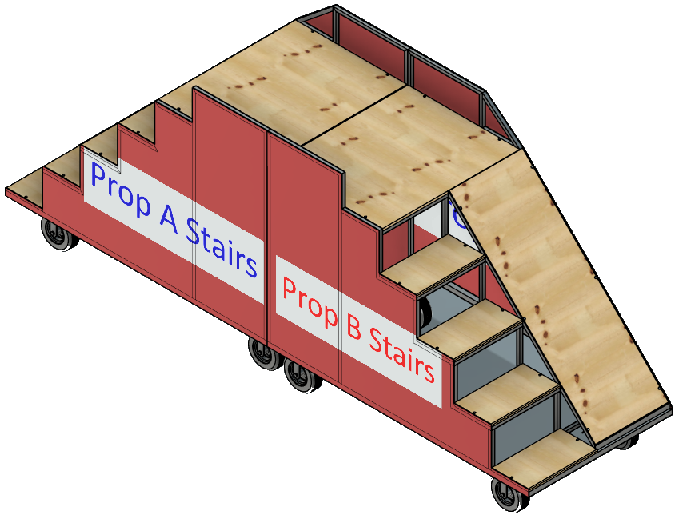
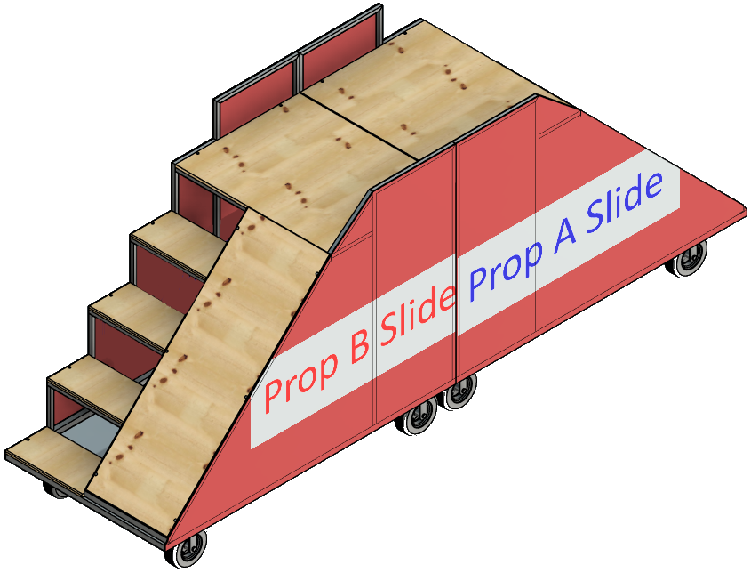
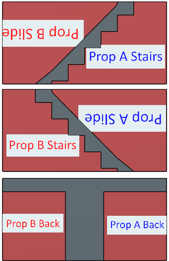
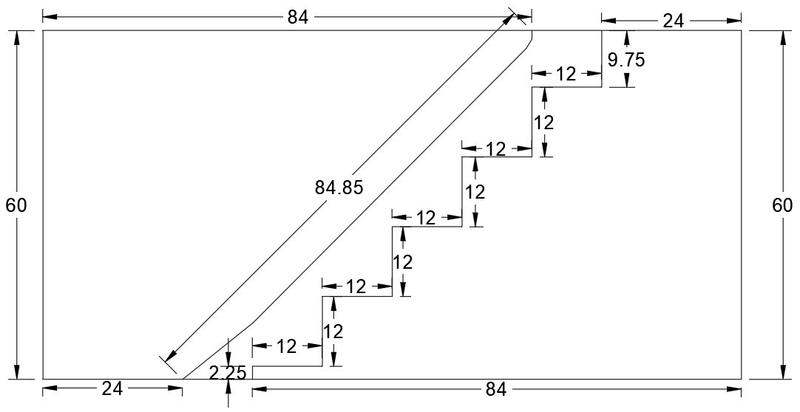
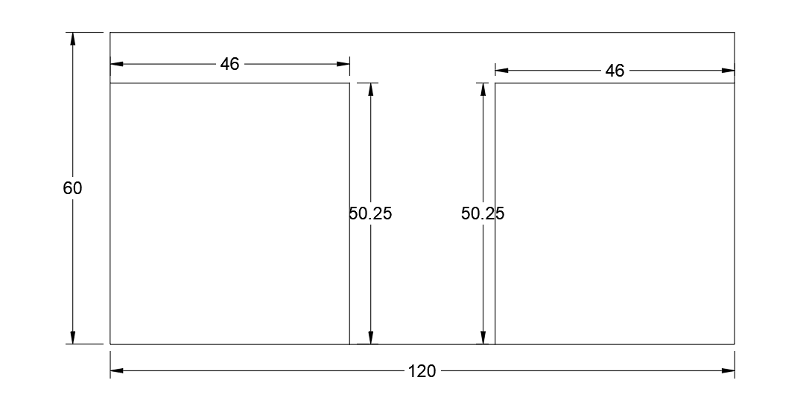
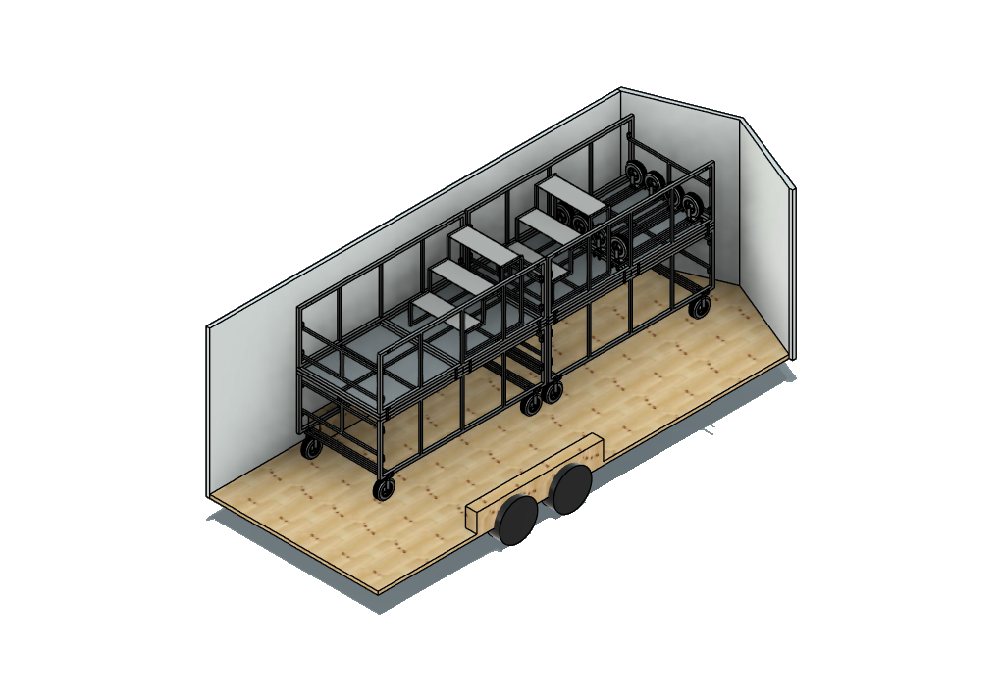
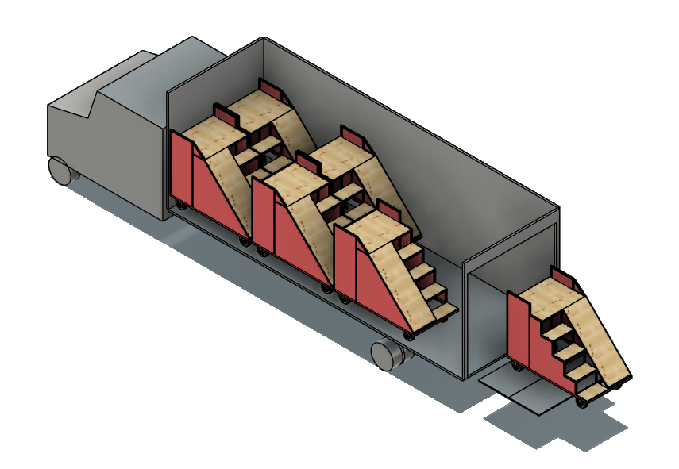

This page tracks the 2026 field show, Paradox—inspired by M. C. Escher’s impossible-perspective drawings—which is why the primary props are mobile staircases: each unit combines a short staircase, a working platform, and a slide on a wheeled steel frame.
The units are designed to work on their own or be staged together, including configurations where platforms meet at a corner to create a larger performance surface.
The design is still being validated with students and staff. There are a lot of details to get right, including slide angle, transitions, stability, and how intuitive everything feels under real use. I will document what works, what doesn’t, and how the design evolves here and on the Maker At Play blog.
First concept · version 2 · All props · Coroplast · Backdrops & frames · Trailer · Front stages · Load plan · Progress
Concept & specifications (working)
First prototype targets from design reviews and initial CAD.

L-shaped arrangement (two units): platforms meeting at 90°.
These were the current targets based on design reviews and the first prototype. Expect changes as we get more real-world feedback.
- Footprint: roughly 7 ft wide by 4 ft deep on casters.
- Platform height: about 69 in. to the top deck (just under 6 ft depending on wheel height).
- Stairs: five rises up to the platform; stair width about 2 ft.
- Top platform: about 2 ft deep, shared between the stair exit and slide entry.
- Slide: plywood ramp; final surface material and angle will be set after student trials.
- Sides: coroplast panels mounted to a steel frame; 1 in. tube handles at about the 4 ft height for maneuvering.
- Mobility: locking casters at the corners; wheels are inset slightly to avoid interference when props are staged close together.
Budget and total unit count are still being worked with the program. Early estimates have been in the mid–three figures per unit for materials, before final scope is locked in.
Videos
Prototype checks: slide tryout and walkaround.
Design update: version 2
May 2026 — refining the platform after the first prototype trials.
The thought is that increasing the size of the top platform and lowering it by one step would make it more stable and easier for the students to stand on and transition onto the slide.
This newer version has the top platform at 4 × 3 ft without increasing the overall length of the prop, so it will still fit in the box trucks. It still has the sides extending upward to act as handles, and keeps the same side profile for coroplast. The angle of the slide is the same. I have also modeled a flag trough in the bottom.
I plan to modify the current prop’s top platform to match it and bring the prop to Audition Camp so the students can test it again. Hopefully, that will finalize the design so we can start building in June.
- Footprint: roughly 7 ft wide by 4 ft deep on casters (unchanged overall length for box-truck loading).
- Stairs: four rises to the platform (one fewer than the first prototype); stair width about 2 ft.
- Top platform: 4 × 3 ft, shared between the stair exit and slide entry.
- Slide: same ramp angle as the prototype; surface material still to be confirmed after student trials.
- Sides: coroplast panels on the same side profile; vertical extensions act as handles (~4 ft high, 1 in. tube).
- Flag trough: modeled in the bottom of the frame for pole storage.
- Mobility: locking casters at the corners; wheels inset slightly when props are staged close together.
All props on the field
June 2026 — final CAD layout for the full show set.

Full field mockup with silhouettes for scale.
With the final prop designs locked in, this is the current plan for what goes on the field:
- 7 media frames — back screens across the rear of the field.
- 12 stair/slide props — six mirrored pairs staged through the center of the show.
- 2 stages — elevated platforms for featured performers.
- 6 front screens — angled panels in the front ensemble area (final count still being confirmed).
Coroplast: sheets & layouts
June 2026 — final CAD sheet layouts for the build phase.
Now that we have a final design for the props, the CAD drawings are complete and we are moving into the build phase. Based on those drawings, I have mapped out coroplast sheet layouts to optimize material usage and minimize cost.
We will order sheets uncut and cut them ourselves. Please include bleed along the cut lines to allow tolerance during cutting and to account for minor variations in prop dimensions during assembly.
Stair/slide props

Mirrored stair pair — one of six on the field.

Mirrored slide pair — sides follow the stair/slide profile.
There are six mirrored pairs of stair/slide props (twelve units total). For each pair, all four side panels can be produced from three 5 × 10 ft sheets of 4 mm coroplast.
The artwork layout must follow the pattern below so we obtain the four required side panels while still printing on only one side of the coroplast. Each piece is labeled so the graphics artist knows how to position it on the sheet. Several pieces must be rotated to maximize material efficiency and ensure the artwork appears correctly once installed — note the text-orientation callouts on the layout drawing.
Total: 6 pairs × 3 sheets = 18 sheets of 5 × 10 ft, 4 mm coroplast.

Sheet layout for one mirrored pair — blue labels are Prop A, red labels are Prop B. Upside-down text is intentional for correct artwork orientation after installation.

Stair/slide side panel cut dimensions (sheet 1).

Back panel cut dimensions (sheet 3).
Stages
For the two stages, the plan is to cover three sides with coroplast, using 4 × 8 ft sheets of 4 mm coroplast — three sheets per stage, six sheets total.
I have also mocked up a three-step stair set for getting on and off the stage. That should meet our access needs for performers.
Media frames (backdrops)
For the seven back media frames, the design stays at no more than three 4 × 8 ft sheets of 10 mm coroplast per frame — 21 sheets total. The mockups show how three sheets fit on each frame.
Front screens
We do not have a final count on front screens yet. The current field mockup uses six; each screen takes one 4 × 8 ft sheet of 4 mm coroplast.
Coroplast order summary
- 18 sheets — 5 × 10 ft, 4 mm (stair/slide props)
- 6 sheets — 4 × 8 ft, 4 mm (stages)
- 21 sheets — 4 × 8 ft, 10 mm (media frames)
- 6+ sheets — 4 × 8 ft, 4 mm (front screens; final count TBD)
Backdrops: Media Frames & 10 mm Coroplast
We’re going back to the media-frame approach with 10 mm coroplast for the backdrops. This is my third pass at solving how to attach panels cleanly without relying on Velcro.
I’ve never liked Velcro for this use. It behaves more like tape than a structural solution and doesn’t hold up well to the repeated assembly and disassembly that happens throughout the season. We leaned heavily on Velcro for the 2021 season props and ended up replacing it after nearly every contest, which is something I want to avoid repeating.
This year I’m planning to add angle iron along the bottom of the frame to create a channel for the coroplast to sit in. That should be more stable than last year’s bottom-bolt approach.
I also want to add a mid-frame rail to give us a solid attachment point across the center. Attaching only at the edges left the panels unsupported, which led to alignment issues and gaps at the seams.
I may still use a small strip of Velcro at the top rail to control the top edge, but only if the rest of the structure is doing the real work.
Trailer: Racks, Frames, and Coroplast Storage
Bringing the backdrops back means another pass at how everything rides in the trailer. Last year was functional, but not efficient.
This year I plan to build a dedicated rack system so each component has a defined place instead of competing for floor space.
Since this is also my final year as props lead, and assuming the media-frame props will stick around, it makes sense to build a repeatable storage solution inside the 20 ft trailer that will continue to be useful after I’m done.
I also want to improve the coroplast storage by adding a better way to secure sheets to a shelf or wall. The goal is to keep them flat and avoid warping during transport.
Front Stages
We’re reusing and expanding last season’s front stages. The plan is to add one additional 4 × 8 ft section, bringing the total to four, and then stage them in pairs on each side of the front ensemble.
I also plan to build two simple sets of steps that sit on the ground behind the stages to make getting on and off easier. For transport, the steps will ride on top of the stages so they don’t take up additional trailer space.
Load planning: trucks & trailer
Packing layout for travel to contests.

Two 26 ft box trucks — six stair props per truck.

20 ft trailer — stage props stacked two-high..
I have mocked up how six stair props fit in each 26 ft box truck — all twelve units across the two box trucks. The prop dimensions were deliberately constrained during design so they fit without disassembly.
In the 20 ft trailer, stageprops can be stacked two-high along the wall. Coroplast will be stored in a rack against the wall. and media frames will be stored on the opposite wall.
I also plan to work on something to help with loading props onto the truck lift gate, so no one has to hold the end of a prop that hangs off the gate during loading.

A prop on the liftgate — the stairs end hangs off the platform and needs support during loading.
Media frames with coroplast, front stages, front-screen carts, and other overflow still need to be mapped across the box trucks and the 20 ft trailer. The goal is to know exactly how much space we have and how much room remains in the box trucks for overflow electronics that would otherwise go on the semi.
Ideally, we remove as much guesswork as possible from contest weekends and make load-in predictable.
All told, this is shaping up to be a big props year, both in size and in complexity.
Progress notes
High-level milestones; fuller write-ups will be linked from here as they are published.
- June 2026 — Final CAD and coroplast sheet layouts for all props; field mockup (7 media frames, 12 stair props, 2 stages, 6 front screens); box-truck packing confirmed for twelve stair units without disassembly.
- May 2026 — version 2 CAD: 4 × 3 ft platform, four stair rises, flag trough; prototype top deck to be updated for Audition Camp student trial (5/26). Band camp follow-up planned for slide angle, transitions, and costume clearance.
- April 2026 — First full prototype assembled; rough cost and fleet options shared with leadership. Open items: slide covering, extra bracing, all-locking casters, and final handle placement.
- February 2026 — CAD updated for 7 ft width, 2 ft deep platform, and side handles (~4 ft high, 1 in. tube).
- Earlier 2026 — Initial mockups from program direction; iteration toward height under 6 ft at the deck and guard-access ideas (e.g. storage for flag poles — placement TBD).